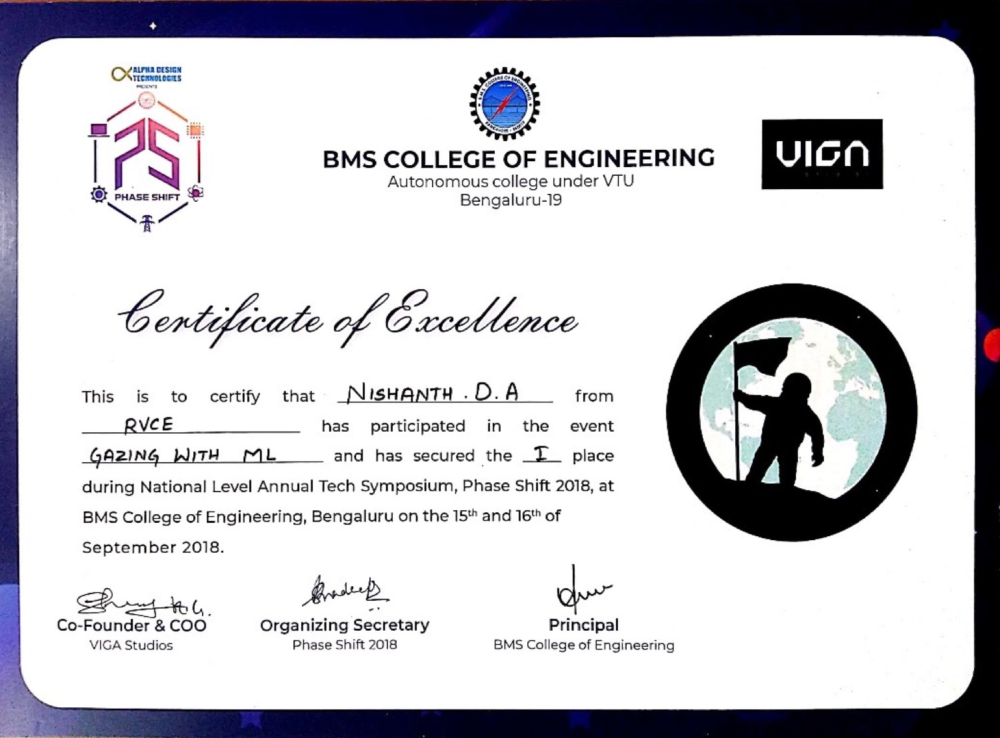

Gazing with Machine Learning · Phase Shift 2018, BMS College of Engineering
Naming galaxies at 74%
A one-day contest, a problem statement handed out on the morning, and a model that had to be built from nothing. The model is long gone. The certificate still says what it scored.
Phase Shift is BMS College of Engineering's annual tech symposium, and in 2018 it ran on the 15th and 16th of September. One of the events was called Gazing with Machine Learning. Rajat Keshri and I entered it from RVCE.
01The format
The rules were simple and slightly brutal. You turned up, they handed out a problem statement, and you built a machine learning model for it from scratch, that day, in the room. There was no take-home phase, no dataset published a week in advance, no chance to arrive with something already trained and claim you had written it that morning.
That format rewards a narrow thing: how quickly you can get from a problem you have never seen to a model that runs at all. Elegance is not on the scorecard. Neither is anything you cannot finish before the clock stops.
02The problem: name the galaxy
The problem they handed out was galaxy classification. An image of a galaxy goes in, and the model has to say what type of galaxy it is.
It is a good competition problem, because it looks easier than it is. Galaxy morphology does not sort itself into tidy visual buckets. The categories shade into one another, plenty of images are faint or partly obscured, and the difference between two classes can come down to the shape of something at the edge of the resolution you have been given. A human squinting at the same picture will hesitate too.

03Seventy-four per cent
The model finished at 74% accuracy. That was the highest score among the participants, and it won first place and ₹3,000.
Both halves of that sentence matter, and they matter in different directions. Seventy-four per cent is not a good number in any absolute sense. Read it off a page with no context and it looks like a model that is wrong one time in four. It was also the best anyone managed in that room on that day, which tells you rather more about the problem, the time limit and the hardware in the room than it does about the model.
A score only means something next to the thing it is being compared with. 74% was a weak result against the literature and the best result available in the room, at the same time.
That is worth holding onto, because the habit of asking "compared to what?" turns out to be the useful part of competitive machine learning, and it long outlasts any particular model you build.
04What did not survive
Almost everything. There is no repository for this one. No notebook, no weights, no write-up of the architecture, no record of the dataset we were given or how many classes it had. I am not going to reconstruct any of that from memory eight years later and present it as fact, because a reconstruction is what it would be.
What survives is the certificate above, a line in a document I typed up in December 2019, and one number. It is the first entry in this archive, and the only one of the eight where I can tell you exactly how well the thing worked.
Every other project in this series has more code and less evidence. This one has no code and a measured result. Given the choice I would rather have the number.